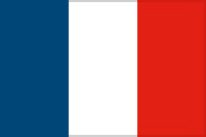

McLaren
A McLaren Formula–1-es csapatot az új-zélandi Bruce McLaren alapította Bruce McLaren Motor Racing néven, saját maga versenyeztetésére. A csapat 1966-ban, a monacói nagydíjon debütált. Az alapító halála (1970) után Teddy Mayer vitte tovább az istállót, majd 1980 végén Ron Dennis vezetésével létrejött a McLaren International.
Sofőrök:

Lando Norris
Kocsiszám:
7
Nemzetiség: 
Daniel Ricciardo
Kocsiszám:
3
Nemzetiség: 
Ferrari
A Ferrari alapítójának, Enzo Ferrarinak szenvedélye volt az autóversenyzés. A gyár története azóta is szorosan összefonódik a Formula–1-gyel. A Ferrari a világ legsikeresebb és legnagyobb tradíciókkal rendelkező Formula–1-es csapata és az egyetlen jelenleg is létező versenyistálló, amely már az első Formula–1-es idényben is elindult, 1950. május 21-én, a Monacói Nagydíjon.
Sofőrök:

Carlos Sainz
Kocsiszám:
55
Nemzetiség: 

Charles Lecrerc
Kocsiszám:
16
Nemzetiség: 
Mercedes
A Mercedes-Benz régóta foglalkozik az autósporttal, beleértve a Formula–1-et is. Az 1930-as években a Mercedes nagy sikert ért el az „Ezüst Nyilakkal” Alfred Neubauer vezetésével. A háború után Juan Manuel Fangio megnyerte a Formula–1-es világbajnokságot Mercedes-Benz W 196- mal 1954-ben és 1955-ben .
Sofőrök:

Lewis Hamilton
Kocsiszám:
44
Nemzetiség:

Gerorge Russell
Kocsiszám:
63
Nemzetiség:
Red Bull
A Red Bull Racing a Red Bull energiaital-gyár tulajdonában álló, osztrák Formula–1-es csapat. A cég másik csapata a Scuderia AlphaTauri (korábban Scuderia Toro Rosso). A csapat 2005-ben debütált az ausztrál nagydíjon. Jelenleg osztrák licensszel versenyeznek. 2010-2013 között négy egyéni és konstruktőri világbajnoki címet is nyertek Sebastian Vettellel.
Sofőrök:

Max Verstappen
Kocsiszám:
1
Nemzetiség: 

Sergio Perez
Kocsiszám:
11
Nemzetiség: 

Alfa Romeo
Az Alfa Romeo F1 Team Orlen egy svájci-olasz Formula–1-es versenycsapat, mely ezidáig három érában szerepelt a sportág történetében. Jelenleg önállóan, a Sauber istálló 2018-as átvételével vannak jelen. Csapatként illetve motorszállítóként 1950-1987 között voltak jelen folyamatosan, majd 2015-ben tértek vissza, kezdetben csak reklámpartnerként.
Sofőrök:

Valterri Bottas
Kocsiszám:
77
Nemzetiség: 

Zhou Guanyu
Kocsiszám:
24
Nemzetiség:

Alfa Tauri
A Scuderia AlphaTauri, rövidítve AlphaTauri egy olasz Formula–1-es csapat, amelyet az osztrák Red Bull italvállalat alapított a Scuderia Toro Rosso jogutódjaként. Az osztrák cég az AlphaTauri nevű divatmárkájának népszerűsítése céljából változtatta meg fiókcsapata nevét.
Sofőrök:

Yuki Tsunoda
Kocsiszám:
22
Nemzetiség: 

Pierre Gasly
Kocsiszám:
10
Nemzetiség: 
Williams
A Williams Grand Prix Engineering (jelenlegi nevezési nevén Williams Racing) egy brit Formula–1-es versenycsapat. Frank Williams és Patrick Head alapította 1977-ben (történetileg a csapat előzményének tekinthető az 1969-től 1976-ig működő Frank Williams Racing Cars). 7 egyéni és 9 konstruktőri világbajnoki címével a Formula–1 egyik legsikeresebb csapata.
Sofőrök:

Alexander Albon
Kocsiszám:
23
Nemzetiség:
Nick De Vries
Kocsiszám:
45
Nemzetiség:
Alpine
Az Alpine F1 Team (ejtsd: apín) egy francia Formula–1-es csapat, amelynek székhelye az Egyesült Királyságban van. A francia Groupe Renault autóipari vállalat tulajdonában van. A csapat a 2021-es Formula–1 világbajnokságon debütált a Renault-ról az Alpine-re történő átrendeződés eredményeként, az Automobiles Alpine márka népszerűsítése érdekében.
Sofőrök:

Esteban Ocon
Kocsiszám:
31
Nemzetiség:

Fernando Alonso
Kocsiszám:
14
Nemzetiség:
Aston Martin
Az Aston Martin 1959-ben és 1960-ban szerepelt a Formula–1-es világbajnokságban. Összesen öt versenyen indult, ezalatt egyetlen pontot sem szerzett a brit márka. A 2015-ös szezon végén hallani lehetett róla, hogy felvásárolják a Force India csapatát, ebből végül nem lett semmi. A 2016-os idény kezdete előtt együttműködési szerződést kötött a Red Bull csapatával.
Sofőrök:

Sebastian Vettel
Kocsiszám:
5
Nemzetiség: 

Lance Stroll
Kocsiszám:
18
Nemzetiség: 
Haas
A Haas F1 Team amerikai Formula–1-es csapat, amely 2016-tól szerepel a sorozatban. Az istálló alapítója az amerikai üzletember, Gene Haas, aki a NASCAR-ban az egyik csapat társtulajdonosa. A bemutatkozó versenyen Romain Grosjean a pontszerző hatodik helyen végzett. Eddigi legjobb szezonjuk a 2018-as volt, amikor 5. helyen végeztek a konstruktőrök között.
Sofőrök:

Mick Schumacher
Kocsiszám:
47
Nemzetiség:

Kevin Magnussen
Kocsiszám:
20
Nemzetiség: